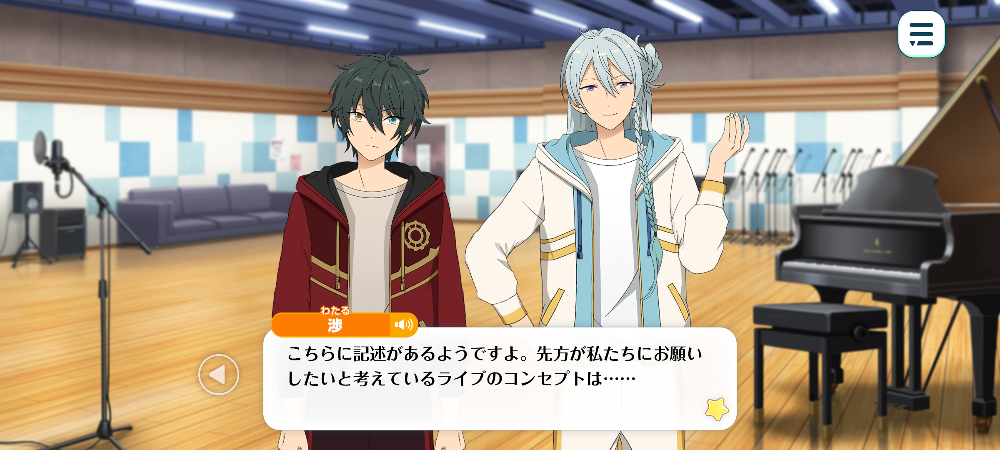
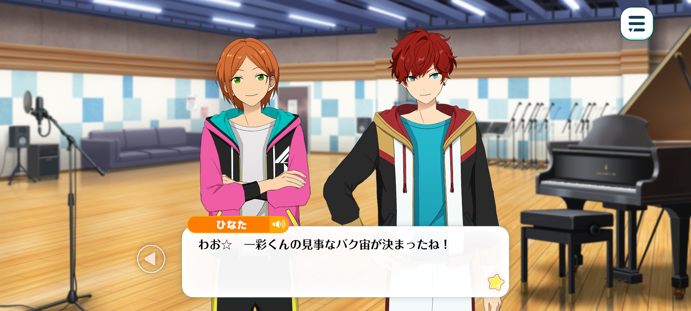
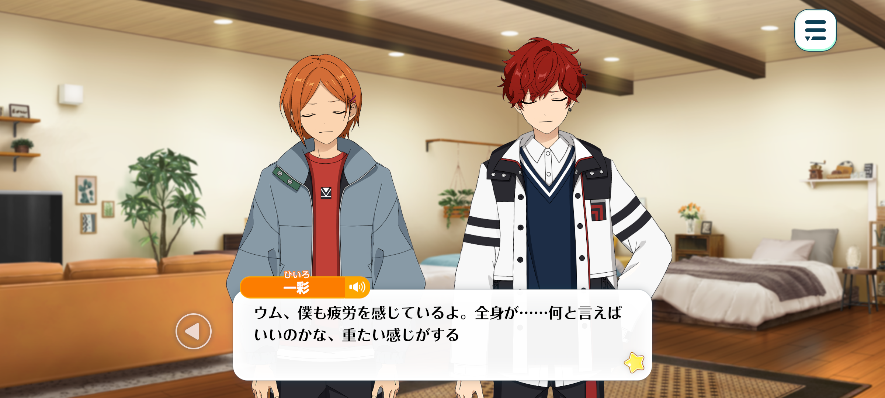

Easter To You
⌒Joyful 2⌒



Mika: ...Umm. What exactly are we supposed to do to make it a "bright and lively opening"?
Haven't they given us any more details about what they're expectin’?
Wataru: Oh, there are a few more details, it seems. They're asking us to come up with a live performance that has...
"A flashy, exciting feel!" and "An explosively energetic atmosphere!"
Hiiro: E-Explosively...?
Shinobu: They've given us a general idea, at least. So we need to match the song with a cheerful, energetic performance, correct?
Hinata: But they did say they wanted something flashy, too. Maybe they're looking for a performance that'll really make an impression?
I mean, "explosive" definitely sounds pretty impactful!
Wataru: An explosion would certainly turn a few heads, wouldn't it? Everyone who heard it would be curious to see what was happening and turn their attention towards the stage!
Mika: Curious, huh...? So, basically, we wanna grab everyone's attention?
So if we put on a real lively, explosive performance, ya think that'll get the audience fired up?
Hinata: Hopefully. When Yuuta-kun and I started doing acrobatics onstage, everyone got really excited!
Shinobu: Ah, is that so? I'll be sure to remember that! If you suddenly do a somersault, the audience would go wild for us! ♪
Wataru: Ah, but that's precisely the problem. Everything Mika-kun does is so polished and precise. No wonder he has trouble imagining something like this, when he's accustomed to performing on a stage where there's no room for the unexpected.
Valkyrie's reputation was built on its distinctive artistic vision, after all.
Mika: Nngh... Well, yer not wrong. Valkyrie's sets and costumes are all pretty elaborate and flashy, but when I think of somethin' flashy, I imagine somethin' completely different.
Hiiro: That's right. I'm having trouble imagining what an "explosively flashy" opening would look like, too. But if it's something like the performances Hinata-kun and Shinobu-kun described, I think I can do that ♪
Something like this!

Hinata: Whoa! ☆ Hiiro-kun, that was an awesome backflip!
Wataru: Excellent height, perfect balance, and such a graceful landing... What wonderful technique! ☆
Shinobu: I see now! Hiiro-kun has the makings of a fine ninja! ALKALOID has so many talented members who would make excellent ninjas! ♪
Mika: Ahaha. I dunno if ninjas exactly scream "Easter", but a few backflips would definitely make for a flashy performance.
Wataru: If it's an Easter touch you're after, then how about this?
Now, everyone, keep your eyes on me...♪
Hiiro: Was that a... dove that just landed on Wataru-senpai's hand? It looks so plump and tasty.
Wataru: ...I'm afraid this little one isn't for eating. Perhaps I'd better find somewhere to hide them.
They say the best place to hide a leaf is in a forest. And the best place to hide a bird is... against one's chest. ☆
Hinata: —Ehh!? The bird just disappeared inside Wataru-senpai's clothes...!
Wataru: Fufufu. How curious. It should be right here, against my chest. Let's have a proper look inside my clothes.
First, I'll put my left arm behind my back, then reach in from the right... Oh? Something's wriggling around in there.
Ahh, there you are! What a cute, fluffy little thing. ♪
Mika: Nnaa, it's a lil' bunny! It's pokin' its head out from inside Hibiki-senpai's clothes...!
Wataru: Well, they do say Easter is all about rabbits. Perhaps, after hearing our conversation, this little one decided to make an appearance in the dove's place. ♪
Shinobu: W-Wait just a moment!? More importantly, Hibiki-dono... Didn't you just slip your arm inside your clothes at a rather... peculiar angle!?
Hiiro: Did you dislocate your joints or something? Either way, this little one is quite plump and adorable too.
Hinata: Can I pet it? Oh, and while we're on the subject, could you teach me that trick you just did? The one where you pop your joints out!
Mika: Ah, I dunno if I can make my joints go all wobbly like that, either. But look at this! ♪
Shinobu: Kagehira-dono! That technique could be very useful for developing a new ninjutsu...!
Hiiro: I'm also interested in how the body and muscles move. Do you think we could put that knowledge to use and improve our performances?
Wataru: Everyone is simply brimming with curiosity and enthusiasm.
And yet, this is only our first day together...
Now that you've all had a chance to show off what you can do, let us enjoy moving our bodies to our heart's content... ♪

Hinata: ...Gyah, I'm beat~! I think I might've overdone it a little for our first day!
Hiiro: Umu. I'm feeling tired as well. My body feels... How should I put it...? It feels so heavy.
Hinata: Ahaha. Even Hiiro-kun is worn out!
And yet, even you're this exhausted, Hiiro-kun... Meanwhile, Hibiki-senpai’s face didn't even change once, all the way through to the end.
You know how Hibiki-senpai showed us some magic tricks at one point? I think he was actually giving us a chance to rest.
So he didn't take a single break. As I thought, he's a pretty mysterious person.
Hiiro: You're sprawled out on the bed like a starfish, Hinata-kun. Would you like me to get you something to eat? We came straight back here after practice, after all.
There aren't any drinks or snacks in the fridge in our room right now. I can go out and get something if you need it.
Hinata: Hmm~... I've got some mineral water, so I'm okay. Why don't you lie down too, Hiiro-kun? You said you were tired, right?
By the way, this position feels really nice. It's like I'm sinking into the bed, and all my tiredness is just floating away... ♪
Hiiro: ...Umu. To be honest, I'm feeling strangely tired too. I used muscles I don't normally use... As you said, Hinata-kun, I'll lie down for a little while.
Fuuah…
Hinata: I feel like I'd sleep until morning if I stayed like this. Let's take a little break, then go find something to eat and get our energy back!
Hiiro: I agree... I want to eat something delicious.
Hinata: Me too~. Let's treat ourselves today and eat whatever we want. And get lots of sleep!
Hiiro: Umu! We need to rest and eat well so we're ready for tomorrow's activities.
Hinata: It's been a while since I've felt this way, but thanks to Hibiki-senpai's coaching, I've been able to experience it again.
Next lesson, I want to... I want to get a better feel for Hibiki-senpai's pace so I can keep up with his training.
If I'm this exhausted every time, I won't be able to keep up. I need to build up my stamina so I can...
There's so much I want to think about and do to make the most of Easter Fes. I've got a whole list of things to work on, too~!
Hiiro: Fufu. Let's do our best, Hinata-kun.
Hinata: Yup!
Let's work together with our senpai and make something great for both our unit and Easter Fes! ♪